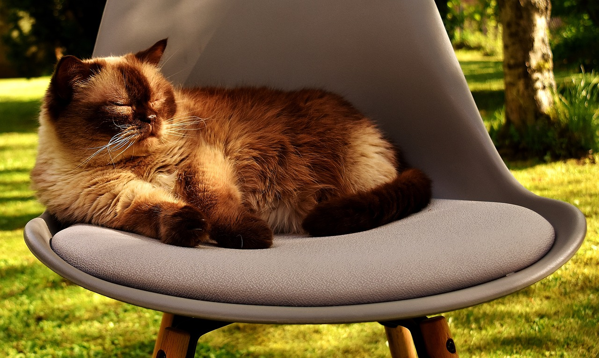

History
Our founders, Valery & Ksenia, incorporate their pet superstore concept as Durham Pet Store, Inc. in 1996. Our first two stores, originally called PetFood Warehouse, open in New Hampshire in 1997. In 2005 we committed to helping save lives, all 3 stores work with local animal welfare groups to hold fundraising and pet adoption events.
We understand how much you pet means to you! Thats why at "house of Pets" you can only find best products on the market.
Why Use Us
At "House of Pets" we offer wide variety of high quality products for you beloved pets.
We understand how much you pet means to you! Thats why at "house of Pets" you can only find best products on the market.
Just look at the cat below, isn't she happy with her life?
